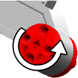
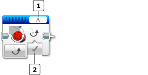

					<table cellpadding="0" cellspacing="0" border="0"><tbody><tr><td>
	
						<h1>反转电机模块<a name="top"></a></h1>
		<div id="block_545" class="block blockHeader">
				<table cellspacing="0" cellpadding="0" border="0">
			<tbody><tr>
				<td valign="top" class="image"></td>
				<td valign="top" class="description"><div class="text-wrapper">反转电机模块会更改电机的旋转方向。在反转电机方向时，通常使电机顺时针转动的编程模块会改为使电机逆时针转动。</div></td>
			</tr>
		</tbody></table>
			</div>
	<div id="block_546" class="block blockChaptor">
		<div class="title"><a name="InvertingAMotorDirection" style="position:relative; top:-10px;"></a>反转电机方向</div>
		<div class="description"><br>
<br>
<br>
 端口选择器 <br>
 反转电机方向输入<br>
<br>
使用模块顶部的<a href="./index.html?id=PortSelector">端口选择器</a>可选择希望反转电机模块影响的电机（A、B、C 或 D）。</div>
	</div>
	<div id="block_1341" class="block blockChaptor">
		<div class="title"><a name="Modes" style="position:relative; top:-10px;"></a>模式</div>
		<div class="description"></div>
	</div>
	<div id="block_1340" class="block blockMode">
		<div class="title"><a name="Mode_Invert" style="position:relative; top:-10px;"></a>反转电机</div>
		<div class="description">反转电机具有一种称为“反转电机”的模式。如果<a href="./index.html?id=InvertMotor#Invert">反转</a>输入为“真”，则所选电机会交换其常规的“向前”和“向后”方向。位于反转电机模块之后、通常使电机顺时针转动的任何编程模块都会改为使电机逆时针转动，反之亦然。<br>
<br>
电机方向反转之后，它会保持反转状态，直至另一个反转电机模块使用等于“伪”的<a href="./index.html?id=InvertMotor#Invert">反转</a>将其改回。<br>
<br>
有关常规电机方向的信息，请参见： <br>
<a href="./index.html?id=MediumMotor">中型电机</a>功率和方向<br>
<a href="./index.html?id=Motor">大型电机</a>功率和方向</div>
	</div>
	<div id="block_547" class="block blockChaptor">
		<div class="title"><a name="Input" style="position:relative; top:-10px;"></a>输入 <a name="Parameters" style="position:relative; top:-10px;"></a></div>
		<div class="description">反转电机模块的输入指定是否应反转所选电机。可以将输入值直接输入到模块中。或者，可以通过<a href="./index.html?id=DataWires">数据线</a>从其他编程模块的输出提供值。</div>
	</div>
	<div id="block_548" class="block blockTable ">
		<table class="blockTable">
		

			<tbody><tr>
<th>输入</th><th>类型</th><th>允许的值</th><th>备注</th>			</tr>
<tr><td>反转 <a name="Invert" style="position:relative; top:-10px;"></a></td><td>逻辑</td><td>真/伪</td><td>如果为“真”，则所选电机会交换其常规“向前”和“向后”方向。<br>
<br>
如果为“伪”，则所选电机会按常规方向转动。</td></tr>		</tbody></table>
	</div>
	
			<div id="quick">
				<div class="header"><a href="./index.html?id=InvertMotor#header">反转电机</a></div>
					<div class="quickText">快速链接</div>
					
					<ul>
	<li><a href="./index.html?id=InvertMotor#InvertingAMotorDirection">反转电机方向</a></li><li><a href="./index.html?id=InvertMotor#Modes">模式</a></li><li><a href="./index.html?id=InvertMotor#Input">输入</a></li>					</ul>
			</div>
	
	</td></tr></tbody></table>